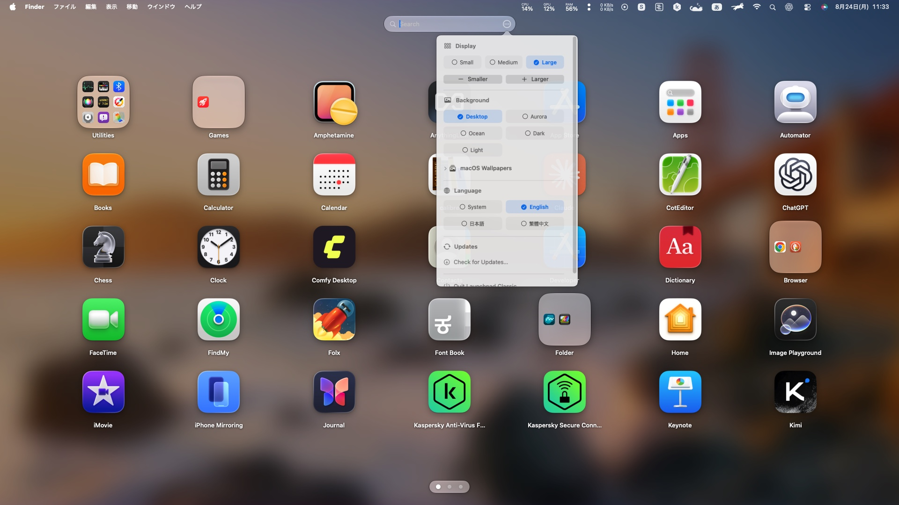

Native SwiftUI · Free & open source
The Launchpad you remember.
Back on your Mac.
Bring back the familiar full-screen app launcher with folders, instant search, smooth paging, wallpapers, and automatic app discovery.
macOS 14–26Apple silicon + IntelMIT licensed
A missing Mac workflow, restored
Everything you need. Nothing between you and your apps.
Launchpad Classic brings back a direct, visual way to find and organize every app—without an account, cloud service, analytics, or subscription.
Designed for muscle memory
Familiar where it matters. Better where it counts.
Folders that work like Launchpad
Drag one app onto another to create a folder. Rename it, rearrange its contents, or drag apps back out.
Instant search
Type a few letters and the full app library filters immediately.
Smooth paging
Drag, scroll, swipe, or use page dots with responsive native animation.
Automatic discovery
Newly installed apps appear automatically. Removed apps disappear without a manual refresh.
Utilities, already organized
Standard macOS utilities are collected into a familiar Utilities folder while your folders stay untouched.
Your wallpaper, your way
Use your Desktop, macOS wallpapers, or built-in backgrounds with adjustable icon sizes.
Three languages
English, Japanese, Traditional Chinese, and automatic system-language selection.
Controls where you need them
A clean launcher—not another settings app.
Display size, background, language, updates, and quit controls sit beside search. The rest of the screen stays focused on your apps.
- Retina-quality icons and memory-conscious caching
- Liquid Glass controls on macOS 26
- VoiceOver and Reduce Motion support

Private by design
Your app library stays on your Mac.
No analytics. No advertising. No account. No telemetry. Launchpad Classic only scans local application folders and connects to the official GitHub release feed for secure update checks.
Ready in a minute
Download. Install. Launch.
Free forever, with a Universal 2 build for Apple silicon and Intel Macs.
- 1
Download the installer
Get the latest PKG from GitHub Releases.
- 2
Open the PKG
Quit any older version, then follow the macOS installer.
- 3
Keep your organization
Future installs replace the app while preserving your folders and preferences.
The current community build is locally signed but not Apple-notarized. If macOS blocks the first launch, Control-click the app in Finder, choose Open, and confirm once.
Good to know
Frequently asked questions
Is this an Apple application?
No. Launchpad Classic is an independent open-source project and is not affiliated with or endorsed by Apple Inc.
How do updates work?
The app checks the official GitHub feed. Sparkle verifies the update signature before downloading and installing a new version.
Does it collect any personal data?
No. Organization, search, and preferences remain local. There are no analytics, ads, accounts, or telemetry.
Which Macs are supported?
macOS 14 Sonoma or later, on both Apple silicon and Intel Macs.
Make your Mac feel familiar again